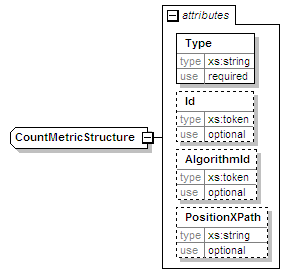

| diagram |
 |
| namespace |
urn:oasis:names:tc:evs:schema:eml |
| type |
extension of xs:decimal |
| properties |
|
| used by |
|
| attributes |
|
| source |
<xs:complexType name="CountMetricStructure">
<xs:simpleContent>
<xs:extension base="xs:decimal">
<xs:attribute name="Type" type="xs:string" use="required"/>
<xs:attribute name="Id" type="xs:token" use="optional"/>
<xs:attribute name="AlgorithmId" type="xs:token" use="optional"/>
<xs:attribute name="PositionXPath" type="xs:string" use="optional"/>
</xs:extension>
</xs:simpleContent>
</xs:complexType> |